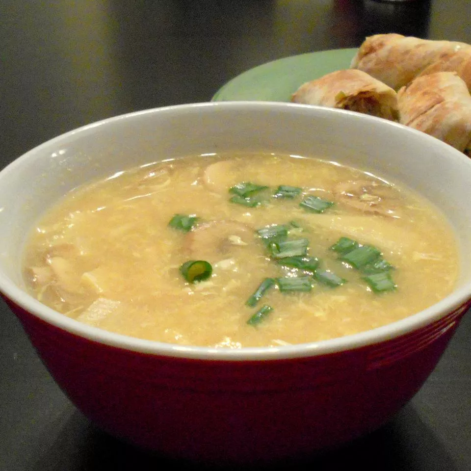

Hot and Sour Chicken Soup

Description
Very good and very easy to make Asian soup. My husband is a chef, and he
said that this was fantastic! (He's hard to impress.) We finished the pot
in one sitting.
Ingredients
- 3 cups chicken broth
- ½ cup water
- 2 cups sliced fresh mushrooms
- ½ cup sliced bamboo shoots, drained
- 3 slices fresh ginger root
- 2 cloves garlic, crushed
- 2 teaspoons soy sauce
- ¼ teaspoon red pepper flakes
-
1 pound skinless, boneless chicken breast halves - cut into thin strips
- 1 tablespoon sesame oil
- 2 green onions, chopped
- ¼ cup chopped fresh cilantro (Optional)
- 3 tablespoons red wine vinegar
- 2 tablespoons cornstarch
- 1 egg, beaten
Steps
-
In a saucepan, combine the chicken broth, water, mushrooms, bamboo
shoots, ginger, garlic, soy sauce, and hot pepper flakes. Bring to a
boil, then reduce the heat to low, cover and simmer while you assemble
the rest of the ingredients.
-
Place the chicken slices into a bowl and toss with the sesame oil to
coat. In a separate bowl, stir together the cornstarch and vinegar, and
set aside.
-
Increase the heat under the broth to medium-high, and return to a
rolling boil. Add the chicken slices. Return to a boil, and then drizzle
in the egg while stirring slowly to create long strands of egg. Stir in
the vinegar and cornstarch. Simmer over medium heat, stirring
occasionally, until chicken is cooked through and the broth has
thickened slightly, about 3 minutes. Serve garnished with green onions
and cilantro.
Source
Home page